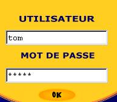

Ressources en Développement
Les psychologues humanistes branchés !
|
Par Jean Garneau , psychologue |
| Avant d'imprimer ce document | Mise en garde | Retour à l'article | Autres articles |
|
Ressources en Développement Les psychologues humanistes branchés ! |
|
| Avant d'imprimer ce document | Mise en garde | Retour à l'article | Autres articles | |
|
Question: Confidentialité et intervention par courrier électronique
Pour comprendre à quel point le courrier électronique est peu discret, on peut le comparer à une carte postale. Ce n'est certainement pas une façon adéquate de transmettre de l'information confidentielle comme un mot de passe, un numéro de carte de crédit ou un secret.
Le risque le plus élevé est celui qui existe à partir du moment où le message est livré. Il est de trois genres. Il y a d'abord le risque d'erreur dans l'adresse: un clic distrait et le message destiné au psychothérapeute peut être envoyé à un ami ou un collègue qui fait partie de votre liste d'adresse. Voilà une indiscrétion accidentelle qui pourrait être très embarrassante! Il y a aussi le risque d'indiscrétion, accidentelle ou non, du côté du psychothérapeute. Si d'autres personnes ont accès à son ordinateur, il est possible qu'elles prennent connaissance d'un message confidentiel et qu'elles soient en mesure de savoir de qui il provient. Lorsque l'ordinateur est dans un environnement professionnel, l'accès y est habituellement limité. Les personnes qui peuvent y accéder sont les professionnels et leurs employés qui sont liés par les mêmes exigences de confidentialité. Mais si l'ordinateur est au domicile du thérapeute, le risque est plus élevé car l'accès à l'ordinateur est souvent partagé et les mesures de sécurité sont habituellement moins sévères. En plus, les personnes qui risquent d'avoir accès au courriel ne sont pas liées par le secret professionnel. Heureusement, les psychothérapeutes sont sensibles à ces risques et ils prennent habituellement les mesures nécessaires pour y pallier. Le troisième risque est le plus grand; il se trouve du côté de l'ordinateur du client. Comme celui-ci n'a pas de raisons professionnelles de le faire, il est souvent peu informé des risques et peu sensible aux possibilités d'indiscrétion par ses proches. Si d'autres membres de sa famille ont accès au même ordinateur, ils peuvent facilement lire son courrier. Par leur lien avec le client, ils ont également de bonnes chances d'être vivement intéressés à ces échanges confidentiels. Si l'ordinateur est fourni par l'employeur dans le milieu de travail, les messages qui y sont conservés sont facilement accessibles aux techniciens responsables du réseau ainsi qu'aux représentants de l'employeur. En somme, le risque le plus élevé de bris de confidentialité est presque toujours du côté de la personne qui consulte. C'est à elle de prendre les mesures nécessaires pour protéger ce qu'elle considère comme de l'information confidentielle. Voici quelques méthodes simples qui aident à garder secrète l'information qu'on ne veux pas dévoiler accidentellement.
 Mot de passeCette méthode n'est pas à toute épreuve; la CIA pourrait facilement résoudre le problème que pose le mot de passe le plus secret et le plus sophistiqué! Mais elle suffit amplement pour nous protéger des indiscrétions accidentelles et de celles qui relèvent d'une simple curiosité. Il faut du temps et des connaissances techniques pour déjouer un mot de passe de bonne qualité.
Comme on crée un mot de passe pour rendre impossible de le deviner, il n'est pas facile de s'en souvenir, surtout si on s'en sert rarement ou si on en utilise plusieurs. Il faut donc le noter dans un endroit sûr, mais d'une façon qui ne permette pas de deviner facilement son usage. Pour la transmission, on peut utiliser le vieux truc du message tronqué. On transmet le mot de passe en deux messages distincts, chacun contenant seulement une partie du code complet. Pourvu que l'interlocuteur ait été avisé à l'avance de la façon dont on va procéder, cette méthode est pratiquement infaillible si on prend soin ensuite de détruire les messages qui ont servi à transmettre cette clé. Si on entretient des communications confidentielles avec plusieurs personnes différentes, il peut être justifié de créer des mots de passe différents. Un seul interlocuteur par mot de passe est une solide précaution contre les erreurs dans l'expédition des messages. Chacun devrait évaluer dans quelle mesure sa situation justifie cette protection supplémentaire. Selon nous, cette méthode simple est une précaution minimale dont tout le monde devrait se servir pour la transmission électronique de toute information confidentielle. Elle n'est pas à l'épreuve des indiscrétions, mais elle est suffisante pour décourager tous ceux qui ne sont pas prêts à y consacrer un effort substantiel et qui n'ont pas une compétence informatique au-dessus de la moyenne. Mais si on accorde une grande importance au caractère confidentiel des informations qu'on transmet, la méthode du cryptage est nettement préférable.
À plusieurs égards, l'utilisation des systèmes de cryptage offerts sur Internet est plus simple et plus facile que la méthode du mot de passe. Elle élimine les deux problèmes principaux qui découlent de ce dernier car on n'a pas besoin de retenir un mot de passe ni de le transmettre. C'est le logiciel de courrier électronique qui se charge de tout. En plus de sa simplicité, cette méthode a l'avantage de fournir une sécurité très supérieure tout en permettant d'utiliser les fonctions habituelles du courrier électronique (réponse insérée dans la citation de l'original notamment). Son inconvénient principal est plus apparent que réel, mais il rebute une forte proportion des internautes. Ceux-ci préfèrent souvent prendre le risque du bris de la confidentialité plutôt que de faire le nécessaire pour ajouter cette fonction à leur système. Pourtant, l'opération se fait en quelques minutes et presque automatiquement si on suit soigneusement les directives claires des fournisseurs qui offrent ce service. Pour ce qui est du coût, il est de l'ordre de 22$ Canadiens (15 €) par année après une période d'essai gratuit de 60 jours. Par habitude, nous utilisons le service offert par VeriSign mais plusieurs autres organismes offrent l'équivalent et la compatibilité entre les systèmes semble parfaitement assurée. Il s'agit d'un système à double clé qui permet de garantir à la fois que l'envoyeur est bien celui qu'on pense et que le message ne peut être lu que par la personne à qui on l'a envoyé. Du point de vue de celui qui s'en sert, ce système est simple: on peut envoyer tout courrier électronique en l'accompagnant d'une signature électronique qui nous est propre. On peut également coder un message à l'intention d'un destinataire unique pourvu qu'il nous ait fait parvenir au préalable un message électroniquement signé. Après un premier échange de signatures, on peut, s'un simple clic, coder tout message et toute réponse. Seul le détenteur de la signature appropriée est capable de lire le message pourvu qu'il fournisse un mot de passe qu'il est seul à connaître.
Nos préoccupations principales son surtout du côté des indiscrétions qui pourraient être commises chez les personnes qui nous écrivent. Voici quelles précautions nous avons jugé bon de prendre. Pour les questions spontanées comme celles auxquelles nous répondons ici, nous n'avons aucun contrôle réel sur la situation. Il faut nous fier au jugement de nos interlocuteurs; c'est à eux à décider dans quelle mesure des précautions sont nécessaires pour protéger leur vie privée. Nous prenons soin de les avertir des risques qu'ils courent et des remèdes possibles. Nous avons inséré des liens vers ces mises en garde à tous les endroits de notre site qui suscitent plus particulièrement des communications avec nous. Nous ne pouvons pas évaluer l'impact réel de ces avertissements, mais nous savons que ces pages sont consultées par un grand nombre de personnes. (Voir «Courrier électronique et confidentialité», «Confidentialité sur Internet» ainsi que «Avertissement et mise en garde».) Pour le service de réponse aux questions personnelles, nous avons un peu plus de contrôle et nous avons pris des mesures supplémentaires. Premièrement, l'information que nous fournissent les personnes qui font appel à nous sont transmises à partir d'un formulaire et non par courrier électronique normal. Ceci fait que ces informations n'ont qu'une brève existence dans l'ordinateur de nos clients. Elles ne sont pas conservées comme le serait un courriel normal mais sont perdues lorsque le logiciel de navigation Web est fermé. En plus, nous recueillons l'information de chaque personne en deux étapes séparées d'au moins une journée, ce qui limite la portée de toute indiscrétion qui surviendrait pendant la transmission. Par ailleurs, nous ne citons jamais le message du client dans la réponse que nous lui envoyons et nous lui expliquons pourquoi. Ceci permet de garder à l'abri de toute indiscrétion l'information fournie par la personne et à laquelle nous répondons. Notre réponse n'est pas protégée lorsqu'elle parvient au client, mais nous espérons que celui-ci est alors suffisamment sensibilisé aux problèmes possibles pour prendre les précautions appropriées. Pour les consultations plus prolongées par courrier électroniques, nous insistons davantage sur l'importance que nous accordons à la confidentialité et sur les précautions que nous jugeons nécessaires. Nous nous assurons que le client soit bien conscient des risques qu'il prend s'il choisit de n'utiliser aucune protection, mais nous acceptons de nous conformer à sa décision. |
|
Vous avez une question qui demeure sans réponse ? Deux options vous sont offertes:
|
|
|
Vous pouvez réagir à cet article ou en discuter avec les autres lecteurs... Vous pouvez lire...
Articles de John Suler, Ryder University Vous pouvez utiliser... Vous n'avez pas encore trouvé ce que vous cherchiez ?
| dans votre exploration ! |